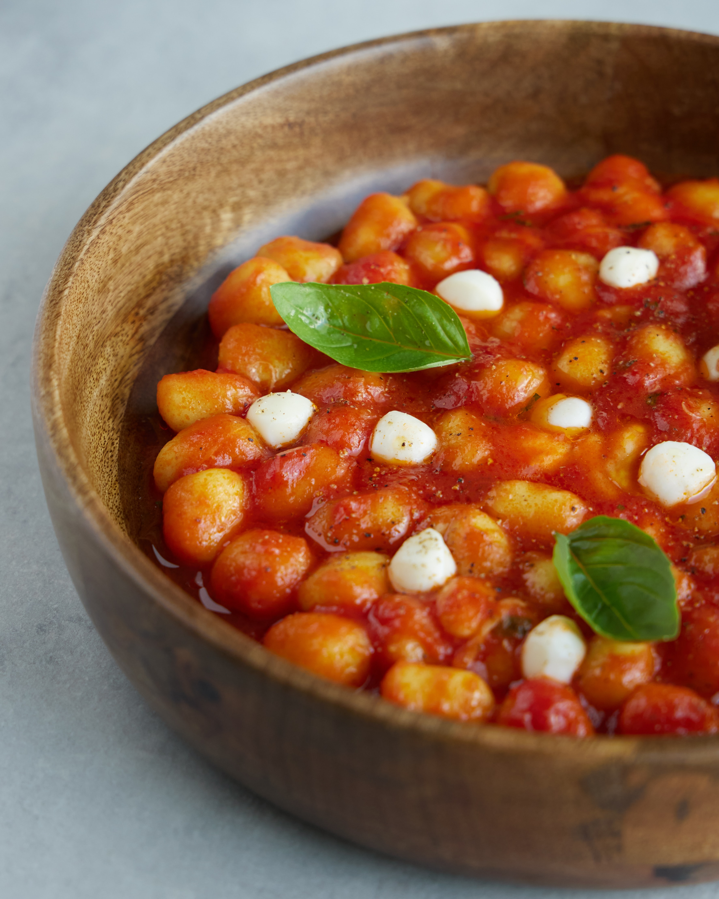

Baked Gnocchi with Spinach and Tomato
How to make baked gnocchi with spinach and tomato

Ingredients
- 500 g Gnocchi
- 1 tbsp Olive oil
- 1 Red onion, chopped
- 1 Garlic clove, crushed
- 125 g Mozzarella ball
- 400 g Tomatoes from a tin, chopped
- 200g Spinach, chopped
- Pinch of sugar
- Salt and pepper
Recipe:
- Preheat the oven to 180°C
- Bring a large pan of water to a boil
- Add salt
- Blanch the gnocchi for 1 minute
- Drain the gnocchi and place it in a baking dish
- Heat the olive oil in a pan over medium heat
- Add the onions to the frying pan and cook for 5 minutes, or until soft
- Add the garlic, tinned tomatoes, oregano, and season with salt and pepper and allow to cook for 5 minutes
- Stir in the spinach and cover the pan with a lid
- Allow to cook for 1 - 2 minutes, or until the spinach wilts
- Pour the sauce over the gnocci
- Tear the mozzarella and scatter over the dish
- Season and bake for 10 - 15 minutes, or until golden brown and bubbling